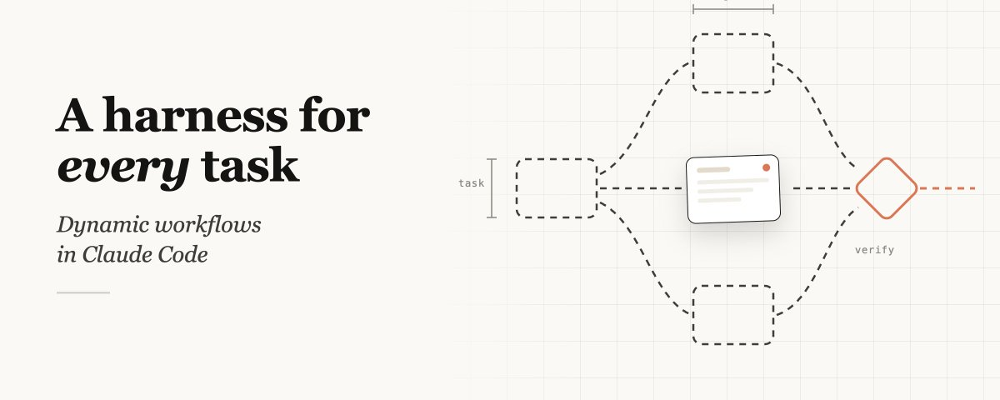

A harness for every task: dynamic workflows in Claude Code
为当前任务现场写一套 harness
先看这五句
- 默认 harness 在同一窗口里既计划又执行。长时、大规模并行、强对抗任务会垮：agentic laziness、self-preferential bias、goal drift。
- Workflow 是现场生成的 JS，用来 spawn 和协调 subagent。可选模型、可选 worktree；中断后同会话可续跑。
- 静态 workflow 必须覆盖所有边角，因而更泛。有了 Opus 4.8，模型能按当次任务写定制 harness。
- 常见构图：分类-行动、扇出-综合、对抗验证、生成-过滤、锦标赛、循环到停。
- 不是每个任务都需要。多数日常编码不必五人评审团；先问是不是真的需要更多算力。

这是一份阅读笔记，不是原文转载。Dynamic Workflows 发布一周后，Thariq 写内部怎么用：Claude 可以为当前任务现场写一套 harness。默认 Claude Code 适合许多像编码的事，但研究、安全分析、agent teams、Code Review 这类，过去要在外面另搭。文章也挂在 Claude Blog。
为什么需要
默认 harness 要在同一个上下文里计划和执行。复杂任务拉长之后，三种失败会冒出来：
- Agentic laziness：安全审查 50 项做了 20 项就宣布完成。
- Self-preferential bias：验证自己的结果时偏向自己。
- Goal drift：多次压缩后，边角要求和「不要做 X」丢失。
Workflow 用各自的窗口和隔离目标对抗这三件事。它执行一份带特殊函数的 JavaScript，也能用 JSON/Math/Array 处理数据；可以指定模型和是否进 worktree。中断或退出终端后，恢复会话可以从断点继续（作者这里强调同会话可续）。
以前用 Agent SDK 或 claude -p 搭的是静态 workflow，为了覆盖边角通常更泛。动态的意思是：模型现在强到可以为当次任务写一套。
构图与用例
提示词可以很具体：偶发失败测试要对抗验证到某一理论成立；从近 50 次会话挖反复纠正写成规则；从半年 Slack incident 找没建票的根因；商业计划从投资人/客户/对手三面撕开；80 份简历排序并回问量尺；名字锦标赛；全库重命名；博客每个技术断言对代码库核验。
常见构图：分类后路由；扇出再在屏障处综合；每个产出配对抗验证；生成后按量尺过滤；锦标赛两两比；未知工作量就 loop until done。
用例不限于代码。迁移按 callsite/失败测试/模块切开，每个修复进 worktree 再对抗审查。Deep research 扇出搜索、抓源、对抗核验、综合带出处报告——也可以对 Slack 或代码库做同样的事。排序上千行不要塞进一次 prompt，改用锦标赛或成对比较。规则遵守可以「一条规则一个 verifier」。根因调查让日志、文件、数据走不相交证据，再上验证和反驳小组。分诊把读不可信内容的 agent 和有高权限动作的 agent 隔开（quarantine），并可和 /loop 组。
用法与边界
触发：直接让它做一个，或用 ultracode。可设 token 预算（「use 10k tokens」）。和 /goal、/loop 组合，适合分诊、研究、核验。按 s 保存到 ~/.claude/workflows，或放进 Skill 当模板而不是逐字脚本。
不要用的时候：日常编码多数不需要更多算力。Workflow 仍新，token 明显更多。作者鼓励把这当成起点，而不是定稿指南。